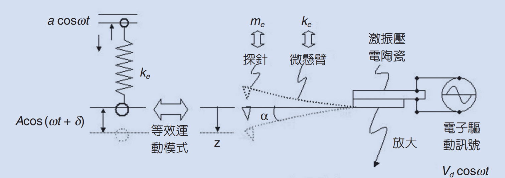
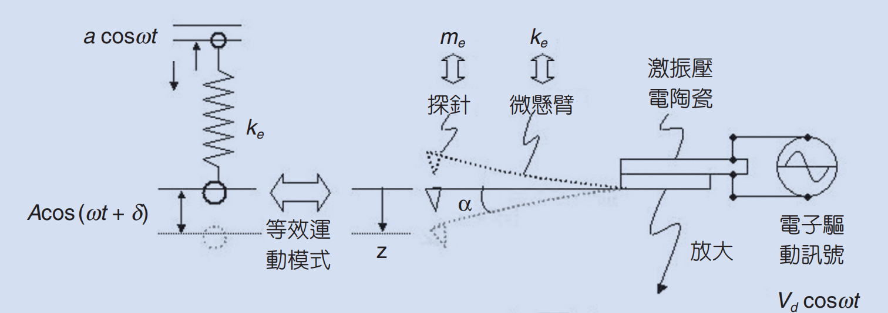
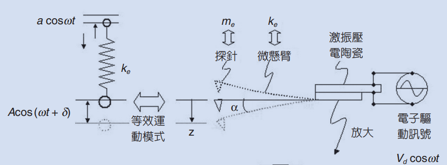
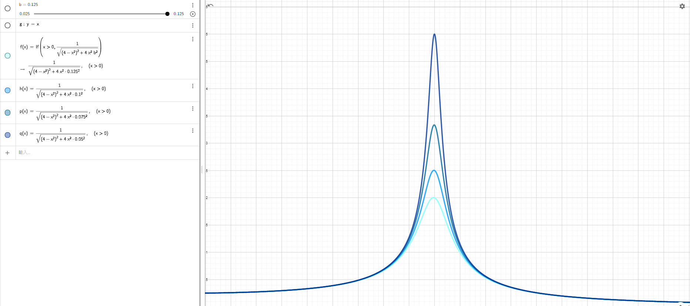
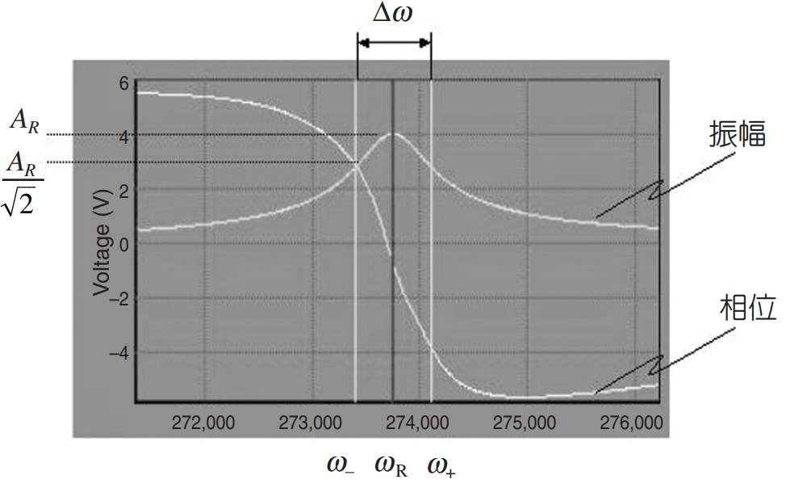
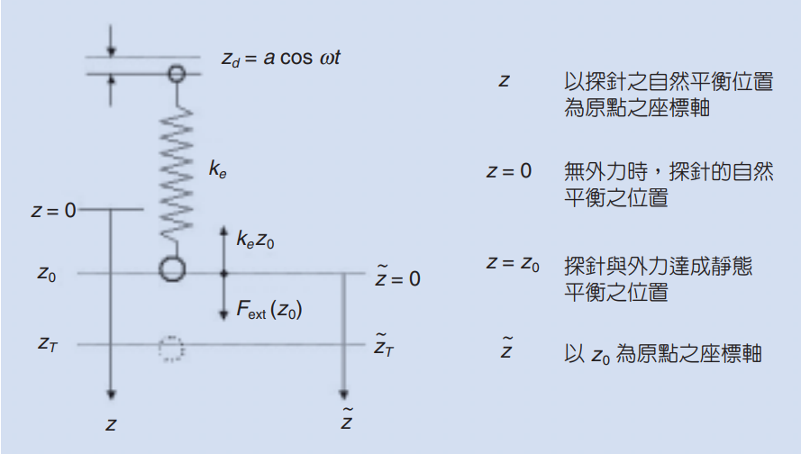
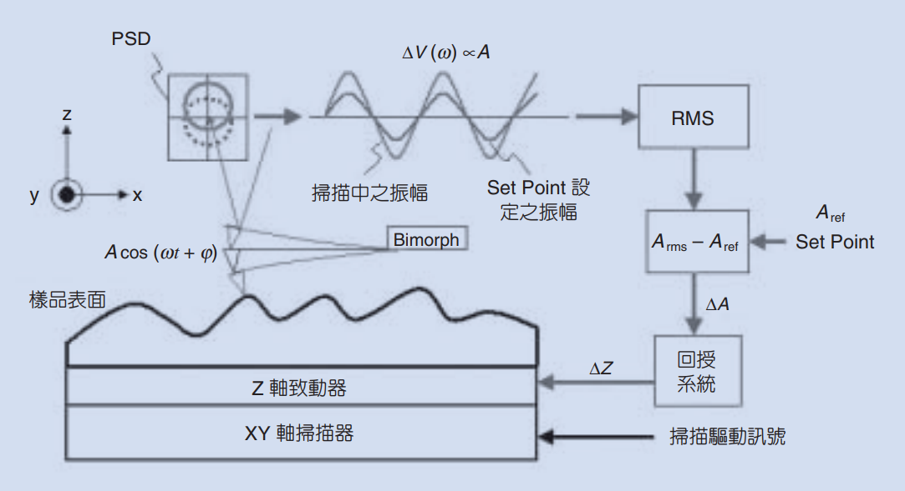
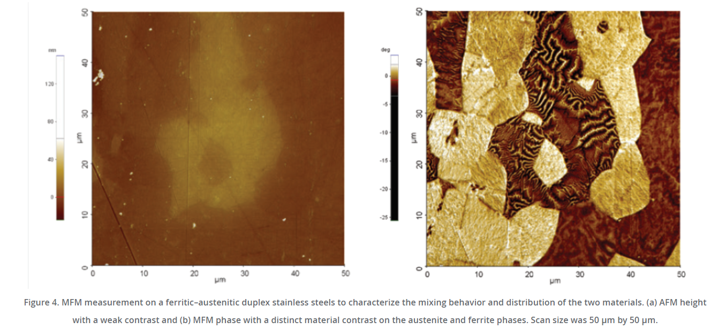

Introduction to AFM
Intrdouction
AFM ，全名為Atomic Force Microscope即為所謂的原子力顯微鏡，顧名思義是利用力量(Force)來掃描樣品表面來成像，相較於一般的光學顯微鏡 (Optical Microscope) 是透過光與樣品表面交互作用後所反應出的光學對比來成像有所不同。光學顯微鏡因為受到光波動性的物理限制，所以在成像的極限最多到達~100nm，可見光無法在解析分辨更小的影像。因此我們為了觀察奈米級的結構，我們需要仰賴SEM、TEM、AFM等更高級的分析儀器，此文將更進一步介紹AFM的原理，並以物理的角度分析AFM運作的過程，使讀者更能了解AFM參數設定的原理，在閱讀機台量測後的數據理解以及機台參數設定上能更駕輕就熟。
 

我們已經知道AFM，是利用探針和表面的樣品產生的微弱交互作用來建構表面的形貌。其中AFM當中所偵測的Force，作用力，又可以依序分為EFM當中的電荷庫倫作用力(表面若是帶有電荷即與探針產生coulomb force)；又或者是透過探針與磁性材料間的磁力，即為所謂的MFM；亦可是探針與半導體材料之間費米能接相異所產生的表面位能作用力的KFM(Kelvin Force Microscope)，等等。當然別忘了最一般的AFM，即所謂的atomic force，就是原子之間在小於10Å時所感受的凡德瓦爾力(van der wall force)。現在在已經了解了AFM的分類和簡單的原理後，我們來更近一步討論AFM這樣的儀器是怎麼去偵測並繪出樣品的表面形貌吧！
在分析AFM的運作原理之前，我們先簡單的介紹
首先，我們要先知道我們所量測的凡德瓦力的大小大約幾百個nN(~100nN)，若是想藉由彈簧的虎克定律來量測靜態的形變量來計算作用力是十分困難的。隨便舉一個彈簧彈性係數100N/m，透過虎克定律我們可以計算出彈簧受到凡德瓦力吸引後所產生的偏移量為
\[\mathit{\Delta}x=\frac{F}{k}=\frac{100\times 10^{-9}}{100}=10^{-9}m=1nm\]
如此微小的位移量儘管是利用光槓桿也很難提高量測的解析度，更何況是樣品底座和探針無可避面的擾動，因此想利用靜態(static)的方式來測量探針與表面的作用力注定只能得到一堆雜訊的悲劇。此外為了量測到探針和表面的凡德瓦力，探針比需十分的靠近表面約10nm以內，若是超過這個距離凡得瓦力以1/r^3的速度decay，而無法被量測到。而如此近的距離往往會使得探針與樣品表面吸附的水膜的表面張力給拉扯，導致AFM系統在偵測到如此作用力後的回饋系統會有遲滯現象(此處的解釋讀者應不易理解須待閱讀完後文的回饋系統會才能完全了解)
那麼竟然無法利用靜態的方式來量測探針與樣品表面間的作用力，那接下來就來介紹AFM是如何透過動態的方式來量測作用力的理論。那以下的推導是基於簡單的古典力學的分析，這些分析的技巧在普物或是大二的理論力學中應該多少都有提及，但是我們這裡會近一步的解釋這些方程式當中的物理變數是如何得實際的被測量以及和AFM儀器的回饋和分析。

首先我們先僅考慮探針自然擺下時自然擺動以及探針一端受到週期性擾動的運動模型(暫不考慮探針與表面交互作用力狀況)。由於探針的懸臂是一隻具有彈性的金屬懸臂，在一端固定的狀態下，另外一端探針頭的部分可以近似成垂直懸掛彈簧振子的運動模型，其偏移平衡位置所受到的恢復力符合虎克定律。而垂直懸掛的彈簧除了受到恢復力以外，在運動的過程中也會受到一個與速度成正比的阻力。最後我們要加入我們的forcing force項，也就是AFM當中tapping mode輕敲模式中的強迫震盪。探針的一端會受到壓電陶瓷的位移而受到強迫震盪，使得探針針尖的部分也會隨之擺動，使得針尖位置距離平衡點的位置也會跟著變化，這個運動系統看似變得更加複雜難以理解，但這也是tapping mode最重要的精華所在，除了可以克服表面水膜的延遲現象，藉由改變壓電陶瓷上電壓的震盪頻率，我們可以利用強迫震盪與特定頻率共振的高辨識度(專一性)，藉由調變壓電陶瓷上外加電壓的震盪頻率對探針震盪的行為，精準的得到探針與表面作用力的大小。
在簡單的用文字描述探針的力學模型後，我們可以透過newton second law寫下探針的運動方程式
\[F\mathrm{=}m_e\ddot{z_T}\mathrm{=-}b\dot{z_T}\mathrm{-}k_e\mathrm{\Delta }z\mathrm{=-}b\dot{z_T}\mathrm{-}k_e\left(z_T\mathrm{-}z_d\right)\]
\[m_e\ddot{z_T}\mathrm{=-}b\dot{z_T}\mathrm{-}k_e\left(z_T\mathrm{-}z_d\right)\]
\[\ddot{z_T}\mathrm{=-2}\frac{b}{\mathrm{2}m_e}\dot{z_T}\mathrm{-}\frac{k_e}{m_e}\left(z_T\mathrm{-}z_d\right)\]
\[\ddot{z_T}\mathrm{=-2}\beta \dot{z_T}\mathrm{-}{\omega }^{\mathrm{2}}_0\left(z_T\mathrm{-}z_d\right)\]
Where
\[\beta \mathrm{=}\frac{b}{\mathrm{2}m_e}\mathrm{\ ,\ }{\omega }^{\mathrm{2}}_0\mathrm{=}\frac{k_e}{m_e}\]
A little bit algebra calculation
\[\ddot{z_T}\mathrm{+2}\beta \dot{z_T}\mathrm{+}{\omega }^{\mathrm{2}}_0z_T\mathrm{=}{\omega }^{\mathrm{2}}_0z_d\]
又$z_d$是受到壓電陶瓷以$cos(\omega t)$振幅a的震盪形式
\[z_d\mathrm{=}acos\left(\omega t\right)\]
\[\ddot{z_T}\mathrm{+2}\beta \dot{z_T}\mathrm{+}{\omega }^{\mathrm{2}}_0z_T\mathrm{=}a{\omega }^{\mathrm{2}}_0cos\left(\omega t\right)\mathrm{=}A_dcos\left(\omega t\right)\]
\[\ddot{z_T}\mathrm{+2}\beta \dot{z_T}\mathrm{+}{\omega }^{\mathrm{2}}_0z_T\mathrm{=}A_dcos\left(\omega t\right)\]
此微分方程式為常見的二階線性常微分方程式，解為通解與特解的疊加
\[z_T\left(t\right)\mathrm{=}z_p\left(t\right)\mathrm{+}z_g\left(t\right)\]
其中
\[ \begin{array}{c}
\mathrm{}z_p\mathrm{(}t\mathrm{)=}A\mathrm{cos}\mathrm{}\mathrm{(}\omega t\mathrm{+}\delta \mathrm{)} \\
\mathrm{}z_g\mathrm{(}t\mathrm{)=}e^{\mathrm{-}\beta t}\left(A_{\mathrm{1}}e^{\sqrt{{\beta }^{\mathrm{2}}\mathrm{-}{\omega }^{\mathrm{2}}_0t}}\mathrm{+}A_{\mathrm{2}}e^{\mathrm{-}\sqrt{{\beta }^{\mathrm{2}}\mathrm{-}{\omega }^{\mathrm{2}}_0t}}\right) \end{array}\] }
Where
\[A\left(\omega ,\beta \right)=\frac{A_d}{\sqrt{{\left({\omega }^2_0-{\omega }^2\right)}^2+4{\omega }^2{\beta }^2}}\]
\[\delta \left(\omega ,\beta \right)={{tan}^{-1} \left(\frac{2\omega \beta }{{\omega }^2_0-{\omega }^2}\right)\ }\]
可以發現$z_T(t)$當中的通解含有指數衰減項，稱做過渡態transient state，在$\mathrm{t}\mathrm{\gg }\frac{\mathrm{1}}{\mathrm{\beta}}$後就剩下穩態steady state的特解$z_p$存在，因此我們所量測到的探針運動模式就是
\[z_T\left(t\gg \frac{1}{\beta }\right)=A\left(\omega ,\beta \right){\mathrm{cos} \left(\omega t+\delta \left(\omega ,\beta \right)\right)\ }\]
在解出tip隨壓電陶瓷震盪的運動方程式後我們引入幾個描述這樣震盪系統的物理參數，共振頻率${\omega }_R$以及品質係數Q。
首先為了讓讀著更好理解探針震盪的情形隨著作用在壓電陶瓷的頻率變化，我們就把eq 給plot出

同時我們也可以將式eq微分得到整個系統在有阻尼狀態下的共振頻率
\[\frac{d}{d\omega }A\mathrm{(}\omega ,\beta \mathrm{)=-}\frac{A_d}{\mathrm{2}}{\left({\left({\omega }^{\mathrm{2}}_0\mathrm{-}{\omega }^{\mathrm{2}}\right)}^{\mathrm{2}}\mathrm{+4}{\omega }^{\mathrm{2}}{\beta }^{\mathrm{2}}\right)}^{\mathrm{-}\frac{\mathrm{3}}{\mathrm{2}}}\left(\mathrm{2}\left({\omega }^{\mathrm{2}}_0\mathrm{-}{\omega }^{\mathrm{2}}\right)\left(\mathrm{-}\mathrm{2}\omega \right)\mathrm{+8}\omega {\beta }^{\mathrm{2}}\right)\]
在共振頻率${\mathrm{\omega }}_{\mathrm{R}}$ 有最大值微分為0
\[\frac{d}{d\omega }A\left({\omega }_R,\beta \right)=Const.\ \times \left(2\left({\omega }^2_0-{\omega }^2_R\right)\left(-2{\omega }_R\right)+8{\omega }_R{\beta }^2\right)=0\]
\[{\omega }^2_0-{\omega }^2_R=2{\beta }^2\]
\[{\omega }_R=\sqrt{{\omega }^2_0-2{\beta }^2}\]
可以看到tip在穩態的震盪情形都是隨著cos的形式震盪，但是在不同的頻率和不同的阻尼係數下，他們的最大振福都不盡相同，而且唯有在共振頻率時有極大值，且從上圖的plot可以看到在共振頻率時tip的振幅可以非常的輕易就達到其他狀態的好幾倍。此外我們也可以發現若是可阻尼係數$\mathrm{beta }$越小，共振時的最大振幅就可以達到越高，整個peak也更加sharp，暗示在測量時有更高的sensitivity。因此我們可以近一步定義品質係數Q
\[Q=\frac{{\omega }_R}{2\beta }\]
若是Q越高，則代表探針和環境所呈現的系統在測量時擁有更高的敏銳度，而因為Q值會受到${\omega }_R$以及$\mathrm{beta }$的影響，又共振頻率會因為探針懸臂的長度、形狀以及探針頭的重量等影響，阻尼係數$\mathrm{beta }$又會受到空氣的濕度、真空值影響，因此在實驗當中我們不會去量測這些參數而是在AFM運作前利用掃頻的方式直接量出系統當下的Q以及${\omega }_R$
所謂掃頻的方式就是將探針遠離樣品，單純做壓電陶瓷上的震盪頻率對探針頭的振幅以及相位的關係。對了，剛剛我們只有講到振幅，其實相位的量測也是十分重要，也透露很多物理資訊，接下來也會仔細說明

上圖是AFM藉由掃頻所得到整個探針系統的物理參數，這些數據是可以直接透過PSD量測到並由電腦作圖的結果。現在的問題是我們該從
現在在已經了解整個探針在尚未和表面產生交互作用力時的運動情形，我們來看看在探針與表面產生作用力後，共振頻率以及相位差的改變是怎麼樣吧！

由於在無外力的狀態時探針頭和重力達成平衡已經有一個原始的平衡點$z_T=0$，然而在受到新的外力作用時我們可以此力與探針頭的新平衡位置於$z_T=z_0$，或是我們可以再給這個新的外力作用下系統新的座標$\tilde{z}$，在外力平衡下$\tilde{z}=0$，意即是
\[\widetilde{z_T}=z_T-z_0\mathrm{\ \ (eq.1)}\]
當然我們由剛剛的外力平衡條件有\textit{}
\[k_ez_0=F_{ext}\left(z_0\right)\]
在確認了這些關係以後，我們把先前建立的力學模型加上探針與樣品表面的作用力也給加入
\[m_e\ddot{z_T}=-b\dot{z_T}-k_e\left(z_T-z_d\right)+F_{ext}\left({\mathrm{z}}_{\mathrm{T}}\right)\mathrm{\ \ \ }\]
利用跟先前一樣的處理手法我們得到探針在表面作用力
\[\ddot{z_T}+2\beta \dot{z_T}+{\omega }^2_0z_T=A_dcos\left(\omega t\right)+\frac{F_{ext}}{m_e}\ \ \ \ (eq.a)\]
由於$F\_ext$是探針與表面的作用力，理所當然也是個距離z的函數，因次我們可以針對F在平衡點z0做泰勒展開
\[F_{ext}\left(z_T\right)=F_{ext}\left(z_0\right)+\frac{dF_{ext}\left(z_0\right)}{dz}\left(z_T-z_0\right)+O\left(z^2\right)\]
\[F_{ext}\left(z_T\right)=k_ez_0+\frac{dF_{ext}\left(z_0\right)}{dz}\left(z_T-z_0\right)\]
將剛剛的變換eq.1帶入eq.a
Hint:$\ddot{z_T}=\ddot{\widetilde{z_T}}$
\[\ddot{\widetilde{z_T}}+2\beta \dot{\widetilde{z_T}}+{\omega }^2_0\left(z_0+\widetilde{z_T}\ \right)=A_dcos\left(\omega t\right)+\frac{k_e}{m_e}z_0+\frac{1}{m_e}\frac{dF_{ext}\left(z_0\right)}{dz}\widetilde{z_T}\]
\[\ \ddot{\widetilde{z_T}}+2\beta \dot{\widetilde{z_T}}+{\omega }^2_0z_0+{\omega }^2_0\widetilde{z_T}=A_dcos\left(\omega t\right)+\frac{k_e}{m_e}z_0+\frac{1}{m_e}\frac{dF_{ext}\left(z_0\right)}{dz}\widetilde{z_T}\]
Hint ${\omega }^2_0=\frac{k_e}{m_e}$
\[\ddot{\widetilde{z_T}}+2\beta \dot{\widetilde{z_T}}+{\omega }^2_0\widetilde{z_T}=A_dcos\left(\omega t\right)+\frac{1}{m_e}\frac{dF_{ext}\left(z_0\right)}{dz}\widetilde{z_T}\]
\[\ddot{\widetilde{z_T}}+2\beta \dot{\widetilde{z_T}}+{\omega }^2_0\widetilde{z_T}=A_dcos\left(\omega t\right)+\frac{1}{m_e}\frac{dF_{ext}\left(z_0\right)}{dz}\widetilde{z_T}\]
\[\ddot{\widetilde{z_T}}+2\beta \dot{\widetilde{z_T}}+\left({\omega }^2_0-\frac{1}{m_e}\frac{dF_{ext}\left(z_0\right)}{dz}\right)\widetilde{z_T}=A_dcos\left(\omega t\right)\widetilde{z_T}\]
\[\ddot{\widetilde{z_T}}+2\beta \dot{\widetilde{z_T}}+{\omega }^{'2}_0\widetilde{z_T}=A_dcos\left(\omega t\right)\ \ \ eq.b\]
最後我們得到
$$\omega^{'}_{0}=\sqrt{\omega^{2}_{0}-\frac{1}{m_e}\frac{dF_{ext}(z_{0})}{dz}}=\sqrt{\frac{k_e}{m_e}-\frac{F^{'}_{ext}}{m_e}}=\omega_0\sqrt{1-\frac{F^{'}_{ext}}{k_e}}$$
可以發現在有外力作用下的探針其運動模型與無外力下幾乎相同，僅有自然頻率}${\mathrm{\omega }}^{\mathrm{'}}_0$需要加上一個外力梯度的修正，其餘微分方程式的形式(form)完全一樣，因此新的$\widetilde{z_T}$解可以仿照先前的分析只做${\mathrm{\omega }}^{\mathrm{'}}_0$的代換)
\[\widetilde{z_T}\left(t\right)=A'\left(\omega ,\beta \right){cos \left(\omega t+\delta '\left(\omega ,\beta \right)\right)\ }\]
\[{\omega}^{'}_R=\sqrt{\omega^{'2}_0-2\beta^2}\]
\[A'\left(\omega ,\beta \right)=\frac{A_d}{\sqrt{{\left({\omega }^{'2}_0-{\omega }^2\right)}^2+4{\omega }^2{\beta }^2}}\]
\[\delta '\left(\omega ,\beta \right)={{tan}^{-1} \left(\frac{2\omega \beta }{{\omega }^{'2}_0-{\omega }^2}\right)\ }\]
由於自然頻率從${\mathrm{omega }}_0$變成${\mathrm{omega }}^{\mathrm{'}}_0$因此相關與自然頻率有關的物理量(振幅、共振頻率、相位)也會隨之變化，現在我們更近一步計算這些物理量改變的量
共振頻率
\[\mathit{\Delta}{\omega }_R={\omega }^{'}_R-{\omega }_R=\sqrt{{\omega }^{'2}_0-2{\beta }^2}-{\omega }_R\]
\[\mathit{\Delta}{\omega }_R=\sqrt{{\omega }^2_0-2{\beta }^2-{\omega }^2_0\frac{F^{'}_{ext}}{k_e}}-{\omega }_R\]
\[\mathit{\Delta}{\omega }_R=\sqrt{{\omega }^2_R-{\omega }^2_0\frac{F^{'}_{ext}}{k_e}}-{\omega }_R={\omega }_R\sqrt{1-\frac{{\omega }^2_0}{{\omega }^2_R}\frac{F^{'}_{ext}}{k_e}}-{\omega }_R\]
\[\mathit{\Delta}{\omega }_R＝-\frac{{\omega }^2_0}{{\omega }_R}\frac{F^{'}_{ext}}{2k_e}\cong -\frac{{\omega }_0}{2k_e}F^{'}_{ext}\]
當外力 $F^{'}_{ext} <0 $ 時，共振頻率與 自然共振頻率都向大的方向偏移；當外力$F^{'}_{ext}>0$時，共振頻率與自然共振頻率都向小的方向偏移。
相位變化
\[\mathit{\Delta}\delta \left(\omega ={\omega }_0\right)=\ \delta '\left(\omega ,\beta \right)-\delta \left(\omega ,\beta \right)\]
\[\mathit{\Delta}\delta \left(\omega ={\omega }_0\right)={{tan}^{-1} \left(\frac{2{\omega }_0\beta }{{\omega }^{'2}_0-{\omega }^2_0}\right)\ }-{{tan}^{-1} \left(\frac{2{\omega }_0\beta }{{\omega }^2_0-{\omega }^2_0}\right)\ }={{tan}^{-1} \left(\frac{2{\omega }_0\beta }{{\omega }^{'2}_0-{\omega }^2_0}\right)\ }-\frac{\pi }{2}\]
\[\mathit{\Delta}\delta ={{tan}^{-1} \left(\frac{2{\omega }_0\beta }{{\omega }^{'2}_0-{\omega }^2_0}\right)\ }-\frac{\pi }{2}\]
Hint
\[\mathit{\Delta}{\omega }_0={\omega }^{'}_0-{\omega }_0={\omega }_0\left(\sqrt{1-\frac{F^{'}_{ext}}{k_e}}-1\right)\cong -\frac{{\omega }_0}{2k_e}F^{'}_{ext}\]
\[\mathit{\Delta}\delta ={{tan}^{-1} \left(\frac{2{\omega }_0\beta }{{\left({\omega }_0-\frac{{\omega }_0}{2k_e}F^{'}_{ext}\right)}^2-{\omega }^2_0}\right)\ }-\frac{\pi }{2}={{tan}^{-1} \left(\frac{2{\omega }_0\beta }{-\frac{{\omega }^2_0}{k_e}F^{'}_{ext}}\right)\ }-\frac{\pi }{2}\]
\[\mathit{\Delta}\delta ={{tan}^{-1} \left(\frac{2\beta k_e}{-{{\omega }_0F}^{'}_{ext}}\right)\ }-\frac{\pi }{2}\cong {{tan}^{-1} \left(\frac{k_e}{-QF^{'}_{ext}}\right)\ }-\frac{\pi }{2}\]
If $F^{'}_{ext}<0 $
\[{{tan}^{-1} \left(\frac{k_e}{-QF^{'}_{ext}}\right)\ }-\frac{\pi }{2}=\frac{\pi }{2}+\frac{QF^{'}_{ext}}{k_e}-\frac{\pi }{2}=\frac{QF^{'}_{ext}}{k_e}\]
If $F^{'}_{ext}>0$
\[{{tan}^{-1} \left(\frac{k_e}{-QF^{'}_{ext}}\right)\ }-\frac{\pi }{2}=-\frac{\pi }{2}+\frac{QF^{'}_{ext}}{k_e}-\frac{\pi }{2}=\frac{QF^{'}_{ext}}{k_e}-\pi \cong \frac{QF^{'}_{ext}}{k_e}\]
\[\mathit{\Delta}\delta =\frac{QF^{'}_{ext}}{k_e}\]
在了解tip是如何偵測到作用力以後，我們回到最初的問題，AFM是如何量測出表面的形貌的呢? 首先探針在掃頻以後得到其共振頻率，接著探針受到壓電材料以共振頻率驅動，開始掃描樣品的表面，由於表面的起伏不同，使得探針受到的作用力不同(反映在相位的改變、共振頻率的改變等等)，系統可以馬上利用psd偵測到這些微弱的變化，若是$\mathrm{\Delta }\mathrm{\delta }\mathrm{>0}$ 表示$F'>0$(越往下作用力越大)，代表起伏的表面更加靠近探針了，這時候會回饋訊號給放置樣品的載台，告訴載台要降低一點，才能控制到剛好探針與表面的距離，
接著xy載台往下一個位置移動去續mapping樣品的另外一個點，若是得到的結果$\mathrm{\Delta }\mathrm{\delta }\mathrm{<0}$ 表示$F'<0$，代表起伏的表面遠離了探針，因此回饋系統告訴載台要往上升，使得$\mathrm{\Delta }\mathrm{\delta }\mathrm{=}0$。最後我們將載台移動的數據對xy作圖就得到表面形貌的結果，這樣的測量方是基於所謂的等作用力回授掃描，而此作用力的量測方式即是測量tip光點投影在psd上面的相位差訊號(震幅)。

最後再回答一下前面所提到的水膜遲滯問題，因為這個afm掃描的過程是透過探針所量測的訊號去回饋給載台做升降，若是有一個水膜會拉扯探針，導致給出的訊號就算載台調降了，水膜依舊會拉扯住探針而導致訊號延遲。若是探針一直保持tapping(震盪的狀態)，
探針可以輕易地克服這樣的靜摩擦力，使得掃描得結果更加精準。
再補充一點，本文已經介紹了探針是如何透過PSD訊號量測微弱作用力，然而此作用力無法直接量化，因為從訊號得到的僅有$F^{'}_{ext}$，作用力的微分，因此EFM MFM，這些量測庫倫作用力磁力的SPM，所呈現的結果都會以相位$\mathrm{\delta }$ (degree)作圖。所以下次看到SPM量測的結果是以相位表示時，別感到疑惑或是不解，其原理就是如此而已。
